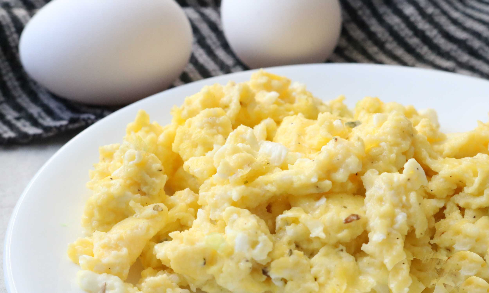

Cottage Cheese Scrambled Eggs

What is cottage cheese scrambled eggs?
When you add cottage cheese to scrambled eggs you get
a cheesy, creamy, and fluffy egg without adding too
many extra fats. The moisture from the cottage cheese
works perfectly with the eggs to result in a flavorful
breakfast dish.
Ingredients
- 1 tablespoon butter
- 4 eggs, beaten
- ¼ cup cottage cheese
- ground black pepper to taste
- 1 teaspoon chopped fresh chives, or to taste (Optional)
Steps
- Melt butter in a skillet over medium heat.
- Pour beaten eggs into the skillet; let cook undisturbed until the bottom of the eggs begin to firm, 1 to 2 minutes.
- Stir cottage cheese and chives into eggs and season with black pepper.
- Cook and stir until eggs are nearly set, 3 to 4 minutes more.